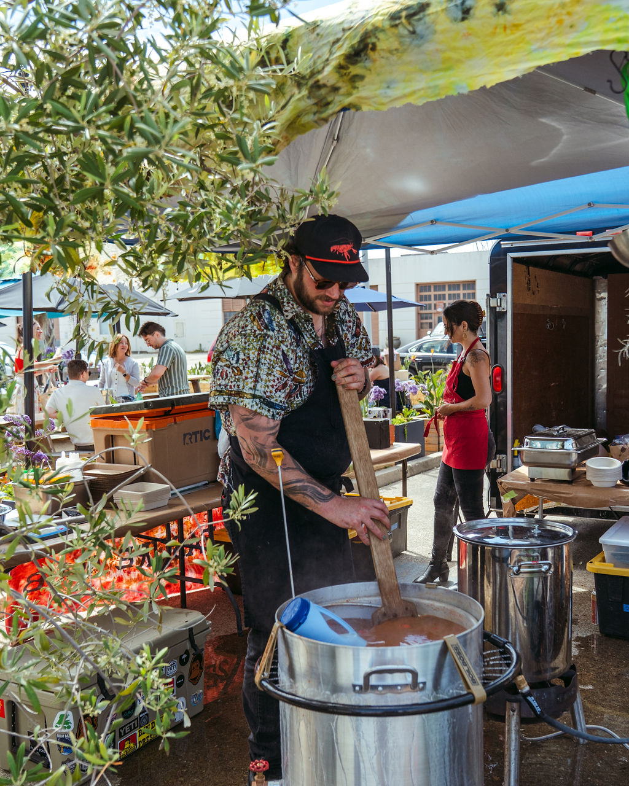
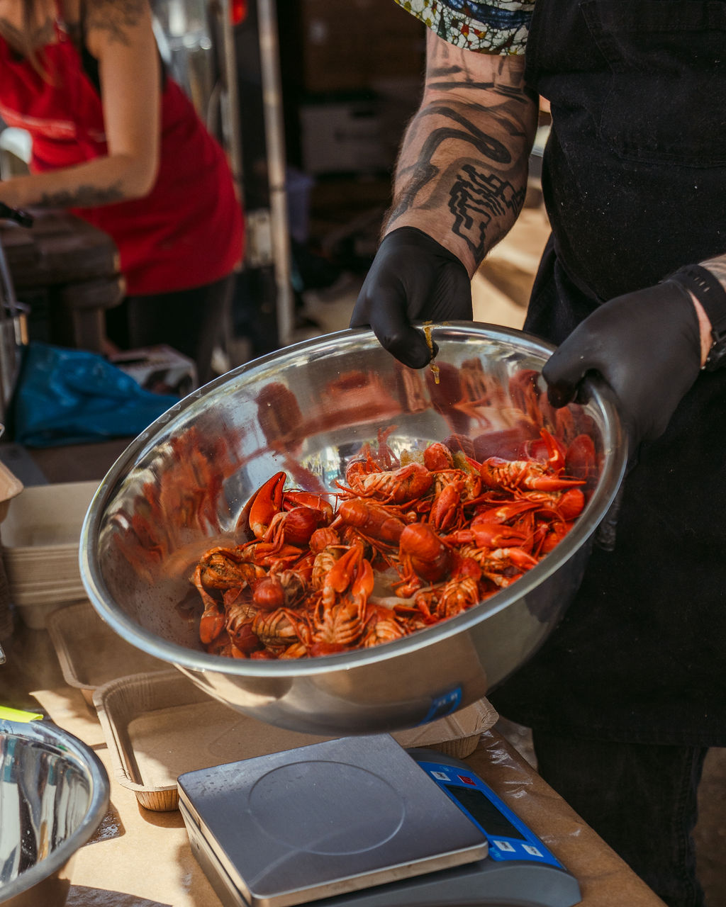
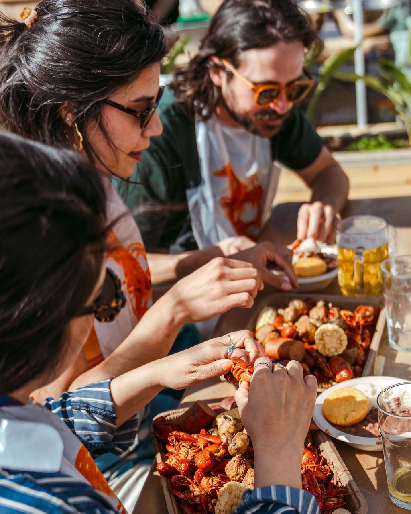
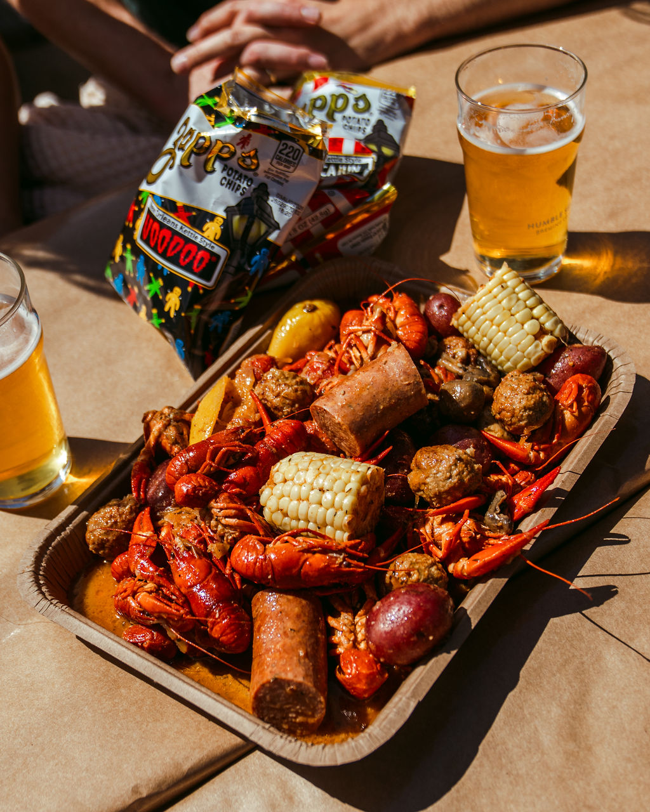
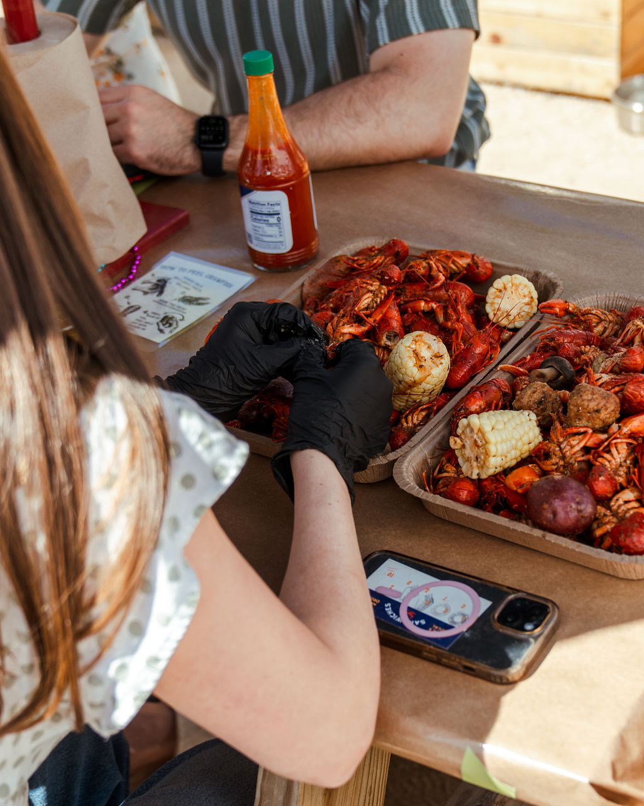

Location TBA
Location TBA
Natural Wine Venue
Berkeley, CA
Music TBA
A special one. Crawfish meets natural wine in Berkeley. Details dropping soon — sign up for SMS to be first to know.

Southern Pacific Brewing
San Francisco, CA
Okie Weiss & the Zydeco Playboys
Boil, then Show. Boil from 2–5, pre-show dance lesson at 5–5:30, then the show runs 5:30–8. Full bar on site.
 Location TBA
Location TBA
Lafayette Location TBA
Lafayette or Orinda, CA
Lafayette Summer Music Workshop — Jam Session
The Lafayette Summer Music Workshop brings musicians of all levels. Their jam session meets our boil.

Drakes Barn
Sacramento, CA
TBA
Our largest format yet. The Barn has a full stage. First event a stone's throw from the very Delta waters where the crawfish live.

Drakes Barrel House
San Leandro, CA
TBA
First boil in San Leandro at another Drakes location. Room to spread out and eat properly.

Shotski's Alpine Lodge
San Francisco, CA
TBA
Stepping out of breweries into the world of dive bars. Boil and music in the alley. Intimate and feral.

Humble Sea Brewing
Alameda, CA
TBA — Planning Zydeco
3rd round at our Alameda clubhouse. Planning to get some Zydeco on the books for this one.

Humble Sea Brewing
Pacifica, CA
TBA
Going back to where the early sellout pattern started. Pacifica was a party. We are so excited to return.